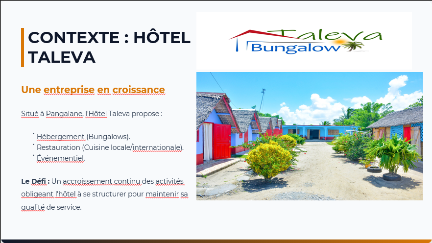
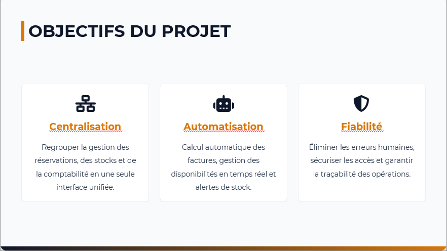
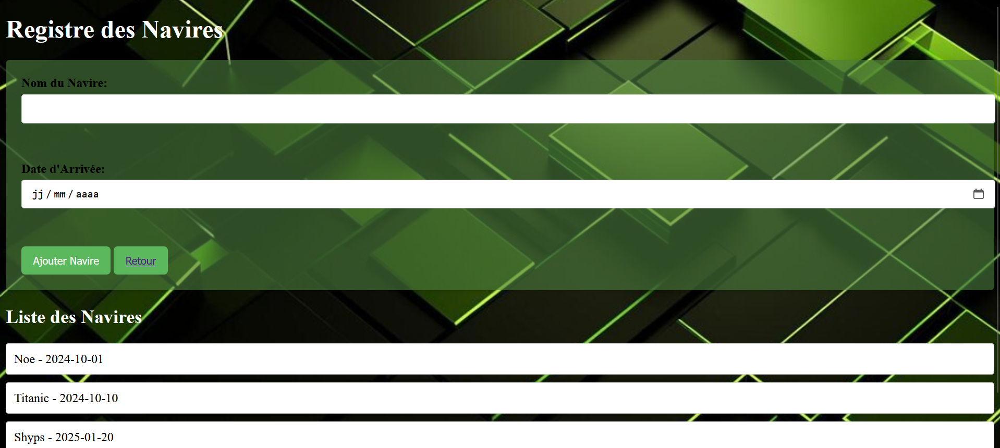

Programmation
Conception de solutions et logique de programmation.
CPYTHONJAVAPHP
Disponible pour de nouvelles opportunités
Développeur d’applications / Passionné d’informatique
Je conçois des solutions numériques utiles, notamment des applications de gestion pour simplifier le travail et améliorer l’organisation.
Naël Andrianirainy
Application Developer
01 — À PROPOS
Je suis Naël Hasimitia Andrianirainy, développeur d’applications basé à Toamasina, Madagascar.
Ma formation en développement informatique et mes expériences en milieu professionnel m’ont permis de découvrir comment les outils numériques peuvent répondre à des besoins réels. Je m’intéresse particulièrement aux applications de gestion, aux bases de données et au développement web.
Mon objectif : continuer à apprendre, renforcer mes compétences et participer à la création de solutions simples, fiables et adaptées à leurs utilisateurs.
02 — COMPÉTENCES
Des bases techniques que je continue à développer au fil des projets et des expériences.
Conception de solutions et logique de programmation.
Création de pages et interfaces web adaptées aux besoins.
Organisation, structuration et gestion des données.
Compréhension des besoins métiers et des processus opérationnels.
Les compétences présentées reflètent les éléments indiqués dans mon profil. Les technologies précises utilisées pour chaque projet pourront être ajoutées au fur et à mesure.
03 — PROJETS
Quelques travaux autour de la gestion et de l’organisation des activités.

Projet orienté vers le suivi des réservations et l’organisation des informations liées à l’activité d’un hôtel, en lien avec mon expérience chez Hôtel Taleva.
Voir l’expérience associée
Une approche de gestion destinée à mieux organiser les informations et les activités d’un établissement de restauration.

Découverte du milieu professionnel et participation aux activités informatiques pendant mon stage à la SMMC à Toamasina.
En savoir plusLes visuels utilisent les images disponibles dans le dossier img/. Remplace les images d’aperçu si elles ne correspondent pas à ces projets.
04 — PARCOURS
Participation à un projet d’application de gestion des réservations. Une expérience pour mieux comprendre les besoins opérationnels d’un établissement hôtelier et l’intérêt des outils numériques.
Première expérience en entreprise dans un environnement professionnel, avec une découverte des activités et enjeux informatiques sur le terrain.
Parcours de formation en développement informatique, avec un intérêt pour la programmation, les bases de données et les applications de gestion.
EN PLUS
Des compétences linguistiques pour collaborer et continuer à apprendre.
05 — CONTACT
Je suis ouvert aux échanges, aux opportunités professionnelles et aux projets qui me permettent d’apprendre et de contribuer.